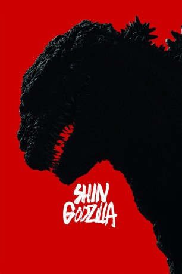

#6602 Shin Godzilla
 gesehen am 08.08.2017
gesehen am 08.08.2017
 
 IMDB-Wertung: 6.8 / 10
IMDB-Wertung: 6.8 / 10  Metascore: 0
Metascore: 0 
Als die japanische Küstenwache eine verlassene Yacht in der Bucht von Tokio inspiziert, wird sie scheinbar aus dem Nichts angegriffen. In der Folge häufen sich ähnliche Zwischenfälle, sodass Deputy Chief Cabinet Secretary Rando Yaguchi (Hiroki Hasegawa) bald überzeugt ist, dass eine Art unbekanntes Lebewesen dahintersteckt. Mit seinen Warnungen stößt er jedoch so lange auf taube Ohren, bis sich plötzlich eine gigantische Kreatur aus dem Wasser erhebt und alles, was ihr im Weg steht, zerstört. Yaguchi stößt währenddessen auf die Forschungsarbeit eines in Ungnade gefallenen Professors und entdeckt, dass die Godzilla getaufte Kreatur durch radioaktive Strahlung entstanden ist. Das japanische und amerikanische Militär ist hilflos gegen Godzilla, also muss Yaguchi einen Weg finden, das Monster zu besiegen. Mit Hilfe der US-Sondergesandten Kayoko Ann Patterson (Satomi Ishihara) schmiedet er einen Plan…
Jahr: 2016
Dauer: 120 Minuten
FSK:
Land: Japan Studio: MangaTonspuren:
Untertitel: Deutsch,
Auflösung: 1080p (1912x796) Größe: 4249 MB
Genre: Action, Horror, Drama, Sci-Fi, Abenteuer
Regisseur: Hideaki Anno, Shinji Higuchi
Drehbuch: Hideaki Anno
Soundtrack:
Darsteller:
- Hiroki Hasegawa als Rando Yaguchi
 Satomi Ishihara als Kayoko Ann Patterson
Satomi Ishihara als Kayoko Ann Patterson Jun Kunimura als Masao Zaizen, Integrated Chief of Staff
Jun Kunimura als Masao Zaizen, Integrated Chief of Staff Pierre Taki als Saigo, Combat Leader
Pierre Taki als Saigo, Combat Leader Takahiro Miura als Journalist
Takahiro Miura als Journalist- Bob Werley als Embassy Staff
- Mark Chinnery als Newscaster
- Shin'ya Tsukamoto als Biologist
- Charles Glover als Ambassador Lansing
 Todd Haberkorn als Rando Yaguchi
Todd Haberkorn als Rando Yaguchi- Satoru Matsuo als
- Markus Müller als German Scientist
- Shô Oyamada als Akihisa Yanagi
- Rachel Robinson als Reiko Hanamori
 Jeremy Schwartz als Kunio Hazama
Jeremy Schwartz als Kunio Hazama- Yutaka Takenouchi als Hideki Akasaka
- Ren Ôsugi als Prime Minister Seiji Okochi
- Akira Emoto als Ryuta Azuma
- Kengo Kôra als Yusuke Shimura, Deputy Chief Cabinet Secretary
- Mikako Ichikawa als Hiromi Ogashira, Deputy Director of Nature Conservation Bureau
- Kyûsaku Shimada als Katayama, Minister of Foreign Affairs
- Ken Mitsuishi als Kozuka, Governor of Tokyo
- Shingo Tsurumi als Yajima, Joint Staff Deputy
- Kimiko Yo als Reiko Hanamori, Defense Minister
- Takumi Saitô als Ikeda, Tank Captain
- Takashi Fujiki als Tokyo Lieutenant Governor
- Yû Kamio als Ministry of Foreign Affairs
- Suzuki Matsuo als Journalist
- Atsuko Maeda als Refugee
- Ren Mori als Refugee
- Kazuo Hara als Biologist
- Akira Ogata als Marine Biologist
- Akira Hamada als Minister
- Alex Hormigo als American Military
- Shôhei Abe als
- Makoto Awane als
- Christopher Bevins als Manabu Mori
- Ed Blaylock als Ruyta Azuma
- Christiane Brew als Researcher
 John Burgmeier als Goro Sekiguchi
John Burgmeier als Goro Sekiguchi- Charles C. Campbell als Yusuke Satomi
 R. Bruce Elliott als Kunihiro Yanagihara
R. Bruce Elliott als Kunihiro Yanagihara Arata Furuta als National Police Agency Commissioner General
Arata Furuta als National Police Agency Commissioner General- Chisako Hara als
- Jun Hashimoto als Official of Japan Self-Defense Forces
- Sei Hiraizumi als Minister of Agriculture, Forestry and Fisheries
 Jeremy Inman als Shuichi Izumi
Jeremy Inman als Shuichi Izumi- Isshin Inudô als Ancient Organism Scholar
- Mafia Kajita als
- Hairi Katagiri als Official Residence Employee
Datei: X:\7+mehr(A-Z)\Godzilla\Shin Godzilla (2016, FSK, 1912x796).mkv seit 24.07.2017
Festplatte: HD Collection-7+mehr(A-Z)+Person
 Es gibt insgesamt 13 Filme in der Gruppe '7+mehr(A-Z)\Godzilla'
Es gibt insgesamt 13 Filme in der Gruppe '7+mehr(A-Z)\Godzilla'